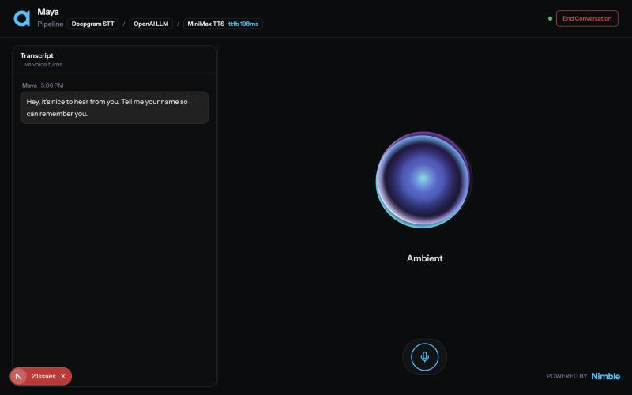
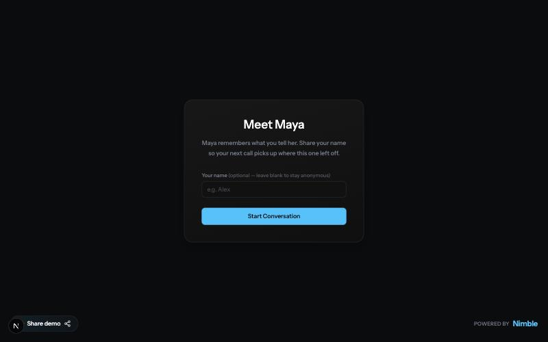
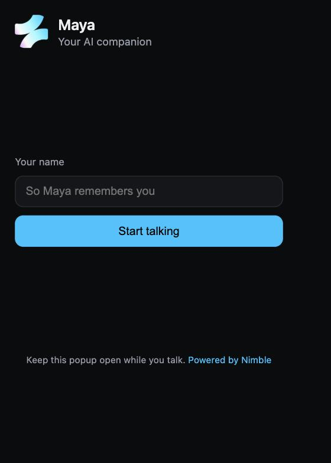

NimbleBuddy is a voice-first AI companion. Talk to Maya out loud — she answers in under a second, picks up where your last call left off, and looks things up on the live web with Nimble.
Everything happens by voice, in real time, with a personality that stays warm and wholesome.
Speak naturally and interrupt any time. Speech-to-text, LLM and a lifelike voice stream over Agora's low-latency network.
Tell Maya your name and she remembers what you talked about last time — stored per user and re-injected on your next call.
Ask about news, weather or anything recent. Maya calls Nimble's nimble_search tool over MCP and answers in a sentence or two.
Talk to Maya from the toolbar without opening a tab — a Manifest V3 popup on the same backend, memory and search.
The web app on the left, the toolbar popup on the right.



You'll need an Agora App ID + Certificate (free), and optionally a Nimble API key for web search.
Clone, add your keys to server/.env.local, start both servers, open localhost:3000.
git clone https://github.com/vim719/NimbleBuddy cd NimbleBuddy bun run setup # add AGORA_APP_ID, AGORA_APP_CERTIFICATE, # NIMBLE_API_KEY to server/.env.local bun run dev
With the backend running, build the popup (or unzip the download) and load it unpacked.
cd extension bun install && bun run build # chrome://extensions → Developer mode # → Load unpacked → extension/dist
Why no live demo link? Maya's backend holds the Agora App Certificate and API keys, so it runs server-side rather than on GitHub Pages. Clone and run locally in about two minutes.